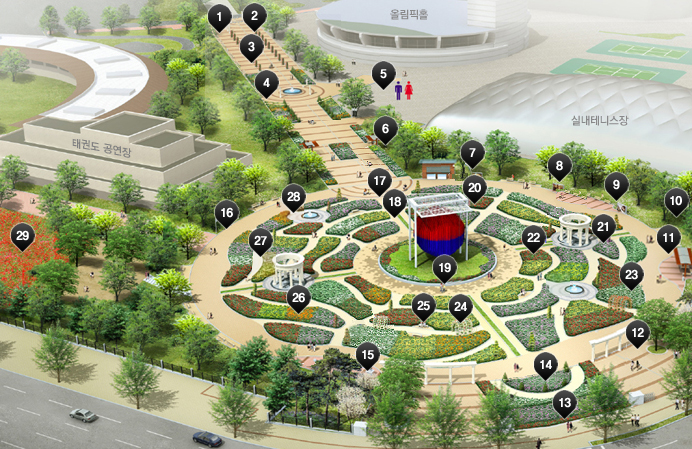

장미관람안내

- 1. 장미광장 안내도
- 2. 열주
- 3. 원통형 장미폴
- 4. 분수
- 5. 남,여 화장실
- 6. 파고라
- 7. 아프로디테의 탄생
- 8. 은하수의 기원
- 9. 제우스
- 10. 잔디밭
- 11. 파고라
- 12. 회랑
- 13. 장미광장 사인
- 14. 장미광장 안내도
- 15. 음수전
- 16. 146종 장미사진
- 17. 장미축제 무대
- 18. 나비형 토피어리
- 19. 가상의 구
- 20. 국산장미 테마원
- 21. 파빌리온
- 22. 하트형 토피어리
- 23. 올림픽공원 포토존
- 24. 장미 아치 터널
- 25. 흔들그네 포토존
- 26. 트리형 토피어리
- 27. 나비 토피어리
- 28. 스텐드형 토피어리
- 29. 들꽃마루
1 장미광장 종합 안내도
장미광장 전역의 시설물 안내로 장미 관람시 편의를 제공하고 있습니다.
2열주
장미광장의 입구에 들어서면 14개의 열주가 두 줄로 마주보고 서서 내방객을 반갑게 맞이합니다. 그리스 신전의 기둥처럼 생긴 열주는 올림푸스산의 신전에서 살고 있는 신들을 나타내면서 이 곳 장미광장이 바로 신들이 사는 신성한 성소(聖所)라는 것을 상징적으로 보여주고 있습니다. 열주는 고대사회의 솟대이며 절 문을 지키는 사천왕이라고 바꿔 말할 수 있습니다.
3원통형 장미폴
장미광장에는 총 38개의 장미폴이 설치되어 있으며 13개 품종의 서로 다른 꽃 색과 다양한 크기의 장미가 입체를 형성하고 있습니다.
4분수
넓이 5m 크기의 분수로 시원한 물소리와 오색 조명의 불빛이 장미와 어우러져 아름다운 장미광장의 운치를 더해준다.
5남,여 화장실
장미광장 입구 P1주차장과 에어돔앞에 있으며 올림픽공원내 화장실은 문화품질 인증 화장실과 인증절차가 진행 중입니다.
6파고라
정원의 특성을 살려 친환경 소재인 목재의 파고라 아래서 장미향기를 느낄수 있는 편안한 휴식을 제공하고 있습니다.
7조형벽 - 아프로디테의 탄생
미의 여신 아프로디테는 아버지 우라노스신의 잘려진 남근과 바다의 물거품이 섞인 속에서 바다에서 태어납니다. 조가비배에서 알몸 상태로 처녀로 성장하게 되고, 서쪽 바람의 신 제피로스가 불어준 바람에 떠밀려 키프로스 섬까지 흘러왔는데, 여기서 그녀를 발견한 계절의 여신 호라이가 그녀에게 옷을 입히고 아름답게 꾸민 다음, 올림퍼스 산에 올라가 여러 신들에게 소개하였습니다. 이렇게 하여 "미와 사랑과 항해의 여신 "아프로디테(로마의 비너스)"가 탄생하였습니다.
8조형벽 - 은하수의 기원
신들의 왕, 제우스신이 인간세계 여인을 유혹하여 낳은 아들이 헤라클레스입니다. 제우스신은 아내인 헤라여신이 헤라클레스를 해칠까봐 걱정하다가 꾀를 내어 아내가 잠든 틈에 아기 헤라클레스를 헤라여신의 품에 넣고 젖을 먹게 합니다. 헤라의 모성애를 자극하면 헤라클레스에 대한 그녀의 원한이 없어질 것이라고 생각하였습니다. 얼마 후 잠에서 깬 헤라여신이 깜짝 놀라 아기를 떼놓자 왼쪽 유방에서 흘러나온 젖이 하늘에 올라가 은하수가 되었고, 이 그림에는 없지만, 오른쪽 유방에서 흘러나온 젖은 땅에 떨어져 흰 백합이 되었습니다.
9조형벽 - 거인족을 물리친 제우스
제우스신의 아버지 크로노스는 자기가 낳은 아들이 자기를 해친다는 저주를 피하기 위해 다섯 아기를 모두 삼켜버립니다. 삼켜진 자식은 헤스티아, 데메테르, 헤라, 그리고 플루톤과 포세이돈의 순서였습니다. 충격은 받은 아내 레아여신은 여섯 번째 아들 제우스가 태어나자 몰래 빼돌립니다. 청년이 된 제우스는 아버지의 술에 약을 타서 다섯 형제를 토하게 한 후, 형제들과 힘을 합쳐 아버지와 그 형제들인 거인족 삼촌들과 전쟁을 벌입니다. 이것을 거인들의 싸움이라고 합니다. 이 전쟁에서 마침내 제우스가 승리하고 '신들의 왕'이 됩니다.
10잔디밭
장미광장 둘레의 아담한 잔디밭으로 나무 그늘이 있으며 어린이등 단체 방문객들이 장미향과 어우러져 초원위에서 휴식을 취할수 있는 공간입니다.
11파고라
정원의 특성을 살려 친환경 소재인 목재의 파고라 아래서 장미향기를 느낄수 있는 편안한 휴식을 제공하고 있습니다.
12회랑
고대 올림픽경기는 제우스신을 비롯하여 올림푸스산에 살고 있는 신들에게 바치는 제례의식에서 기원하였습니다. 그래서 제우스 신전이 있는 올림피아 산을 비롯하여 태양의 신 아폴론 신전이 있는 델포이, 바다의 신 포세이돈 신전이 있는 코린트에서 열렸습니다. 4년마다 한 번씩 1천 2백년 동안 293회나 개최한 고대 올림픽경기는 체육과 예술이 결합한 헬레니즘 문화의 정화였습니다. 전쟁을 멈추고 올림피아광장에 한데 모여 무기를 내려놓고 벌거벗은 맨몸으로 정정당당하게 경기를 벌임으로써 인간의 한계를 넘어 신들의 경지로 다가가는 육체와 정신의 힘을 신들 앞에 드러내었습니다. 그러므로 장미광장에 서 있는 두 개의 회랑은 열두 신들이 모여 살고 있는 올림푸스 신전을 상징하고 있습니다.
13장미광장 사인
장미광장의 사인은 외부 공모를 거쳐 장미광장과 잘 어울리는 시안을 선정하였습니다.
14장미광장 종합 안내도
장미광장 전역의 시설물 안내로 장미 관람시 편의를 제공하고 있습니다.
15음수전
올림픽 공원내 음수전은 아리수를 사용하고 있으며 일일 점검으로 항상 청결함을 유지하고 있습니다.
16146종 장미사진 전시
장미광장에 식재되어 있는 장미 146종을 사진으로 담아 전시하고 있으며 한겨울에도 장미광장의 장미를 느낄 수 있습니다.
17장미축제 무대
장미광장 중앙에 위치한 무대는 임시 가설로 봄,가을 축제 때 공연 및 참여 행사가 열리는 메인 무대입니다.
18나비형 토피어리
나비가 날아가는 형상의 구조물에 알바 메이딜란드의 미니 계열의 하얀 장미를 연출하였다.
19가상의 구
서울 올림픽을 개최한 대한민국에 경의를 표하기 위해 베네쥬엘라 작가 헤수스 라파엘이 만들었습니다.
가상의 구는 높이 24m, 지름 17m의 크기로 알루미늄 파이프를 잘라 매달아 놓은 작품입니다. 바람이 불면 알루미늄파이프가 부딪혀 아름다운 음악소리도 내며 광장 한가운데 우뚝 서 있습니다. 태극형태의 구는 고정된 형상이 아닌 가상의 것으로, 시간 속에서 형상이 조성되고 또 변화하는데, 이런 움직이는 조각 작품을 키네틱 아트(kinetic art)라고 합니다. 작가가 빨강과 파랑을 선택한 것은 올림픽 개최국인 한국에 경의를 표하기 위함이라고 합니다.
20국산장미 테마원
국내에서 육성된 150여종의 장미 중 순수 한글명의 장미 5종을 추천받아 식재 하였습니다.
21파빌리온
파빌리온은 ‘누각, 정자, 별관’의 뜻을 가진 단어입니다. 베르사이유 궁전 뒤 쪽에 있는 [프띠 트리아농 Petit Trianon]은 프랑스 대혁명 때 단두대의 이슬로 사라진 비운의 왕비 마리 앙트아네트가 자주 찾아와 머물던 “작은 별궁‘입니다. 소박한 시골 풍경을 보여주는 이 별궁 한 쪽에 열두개의 하얀 기둥이 둥근 지붕을 받치고 있는 ‘사랑의 정자(亭子) Temple of Love’가 있습니다. 정자 안에는 ‘사랑의 신’ 에로스가 활에 시위줄을 매는 모습의 조각상이 서 있어 사람들의 상상력을 자극합니다. 앙트아네트 왕비의 침실창문에서 마주 보이는 이 정자에서 연인이었던 페르센백작과 밀회를 나눴던 곳이라고 짐작들을 하지만 그녀의 말 그대로 어린 자녀들과 장난을 치며 놀았던 한 평범한 엄마가 ‘내 생애에 가장 행복한 시간을 보낸 장소’이기도 합니다. 비록 둥근 지붕도 없고 사랑의 활을 가지고 다니는 에로스신도 없지만 장미광장에 있는 파빌리온은 연인이건 자녀이건 사랑을 나누며 행복을 느꼈던 앙트아네트왕비의 ‘사랑의 정자’ 입니다.
22하트형 토피어리
사랑을 의미하는 하트모양의 구조물에 오렌지 메이안디나를 식재하여 주황색의 장미하트를 연출하였다.
23올림픽공원 구경 포토존
올림픽공원 내 사진 명소를 작가와 직접 현장답사을 하고 사진 찰영을 통해 검증된 장소를 선정 올림픽공원 9경을 테마화 하였으며 그중 마지막 9경 장소가 장미광장입니다.
24장미 아치 터널
아치형 장미터널 하얀색의 몬자뎅&마메종 덩굴장미를 아치형 터널 구조물에 유인하여 2개의 꽃 터널을 연속적으로 연출하였다.
25흔들그네 포토존
장미광장 중앙에 설치되어 있는 그네는 흔들거리는 벤치의 기능과 포토존의 복합적 기능을 겸하고 있으며 장미와 함께 누구나 어울리는 포토 명소다.
26트리형 토피어리
나무 모양의 구조물에 덩굴성 장미를 끌어 올려 트리를 연출하였으며 핑크색 장미가 앙증 맞다.
27나비 토피어리
나비가 날개를 펴고 있는 형상의 구조물에 레드 메이딜란드의 미니계의 적색에 중심이 백색인 장미를 연출하였다.
28스텐드형 토피어리
스텐드형의 철 구조물에 핑크 스와니의 덩굴장미를 식재하여 입체감 조성하였다.
29들꽃마루
봄, 가을 두가지의 테마로 봄에는 꽃양귀비를 파종하여 6월에 개화시키고 가을에는 황화 코스모스를 파종하여 9월 개화된다. 올림픽공원내 사진 명소 9경중 8경이며 9경인 장미광장과 인접하여 장미와 잘 어울리는 또 하나의 테마 공간인 들꽃마루입니다.